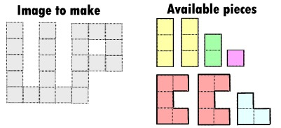

The children on the playground are now playing with funny puzzles. They have a number of pieces and they have to make a pre-determined image. Imagine for example that you have to form the image depicted in figure 1, only with the available pieces.

Figure 1 - The image and the pieces of the puzzle
The idea is to use all the pieces to form the image. The pieces can be rotated (by 0, 90, 180 or 260 degrees). Since the pieces are equal from both sides, they can also be flipped, and also they can be at the same time flipped and rotated. With this rules, one way to form the image with the pieces would be the one illustrated in figure 2.
Figure 2 - Combining the pieces to form the puzzle
Can you help the children in how to solve every puzzle they have in hands?
Given a set of pieces and an image, you have to discover if it is possible to combine the pieces in order to form the image. An image is always a connected set of squares (meaning that there are no disconnected parts of the image). At the end, there can be no pieces left.
The first line of the input will contain two integers H and W, which respectively indicate the height and the width of the minimal square than can enclose the image to form (1 ≤ H,W ≤20). Than come exactly H lines describing the image itself, each of these lines exactly with W chars. A '#' means a square that belongs to the image and a '.' means one that does not belong.
After that comes a single line with an integer P indicating the number of pieces available (1 ≤ P ≤400), followed by P sets of lines describing the pieces, in a similar way of how the image is described. Each piece starts by having a single line indicating PHi and PWi, the height and width of the minimal square enclosing the piece (1 ≤ PHi, PWi ≤ 20), followed by PHi lines with PWi chars with the piece, where '#' means a square that belongs to the piece and a '.' means one that does not belong. Note that the pieces can come in any order.
For each test case, you must output a single line with the word Yes if the image can be made with the pieces or No if that is not possible. Remember that all the pieces must be used and that the pieces can be rotated, flipped or suffer both of these transformations.
5 7 X.X.XXX X.X.X.X X.X.XXX X.X.X.. XXXXX.. 7 3 1 X X X 3 1 X X X 2 1 X X 1 1 X 3 2 XX X. XX 3 2 XX X. XX 2 2 X. XX 3 3 .X. XXX .X. 2 2 2 .X XX 2 1 X X 3 2 .X .X XX 1 3 2 X. X. XX
Yes No Yes
2005 Programming Contest of Porto University
Round 2, 28 of September of 2005
(Author: Pedro Ribeiro - DCC/FCUP)